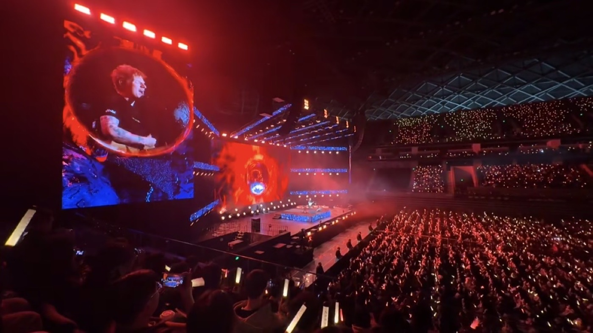
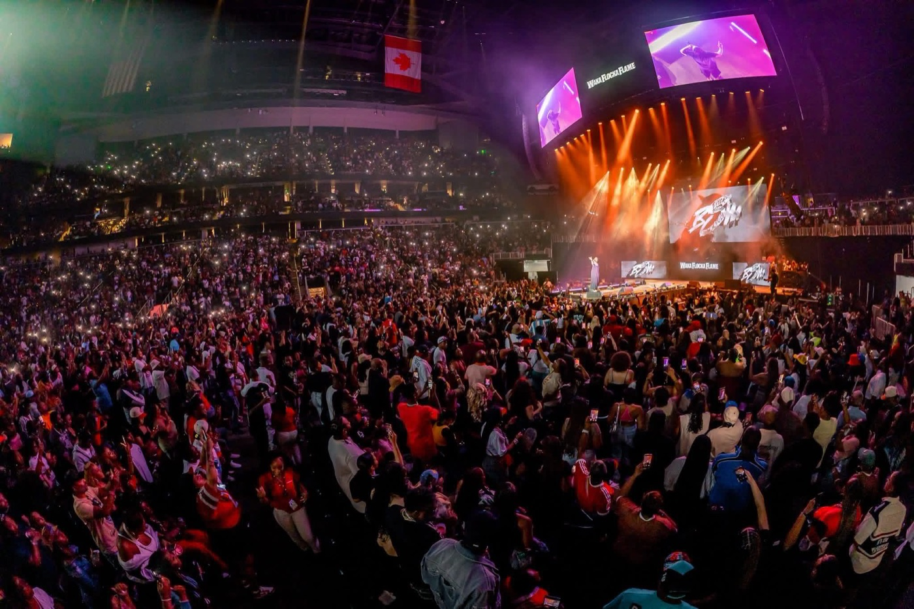
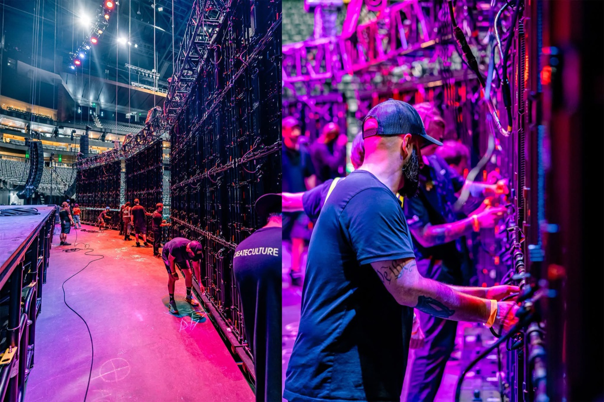
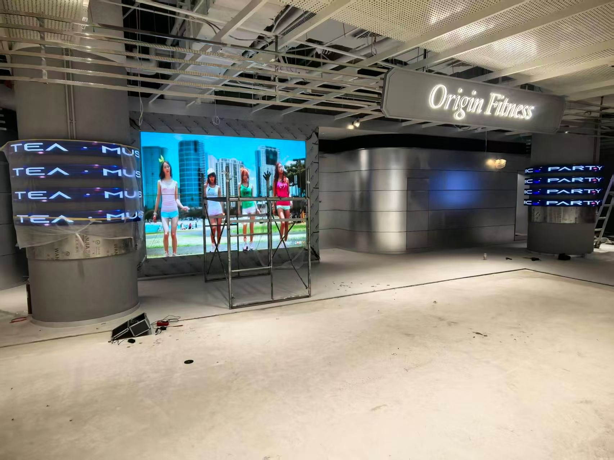

By David
What is different about LED display outdoor rental? LED display outdoor rental uses panels built for the weather, the bright light, and the rough handling of open-air events. An indoor rental panel that works in a venue can fail outdoors in rain, wind, and sunlight. This 2026 guide explains what to look for in outdoor rental screens and how to run them reliably.
Outdoor events are harsher on LED panels than any indoor venue. Rain, wind, dust, and direct sun all attack the screen, and the audience expects a bright, readable image in daylight. A rental fleet that works outdoors needs panels designed for it, not indoor panels used outside.
This guide is written for rental companies and event producers running outdoor screens. It covers the weather protection, brightness, rigging, and power factors that decide whether an outdoor rental screen performs or fails.
The first requirement for outdoor rental is a proper IP rating. Panels rated IP65 or better resist rain and dust. A panel with a lower rating that gets caught in a shower can fail immediately or corrode over time. For a rental fleet that works outdoors, the IP rating is not optional.
| IP Rating | Protection | Outdoor Suitability |
|---|---|---|
| IP54 | Splash resistant | Sheltered only, risky outdoors |
| IP65 | Water jet resistant | Suitable for outdoor use |
| IP66 | Strong water jet | Suits exposed outdoor sites |
| IP67+ | Immersion rated | Extreme exposure, rarely needed |
Check the rating applies to the whole panel, including connectors and seams, not only the front face. A panel rated IP65 at the face but IP54 at the connectors will let water in at the back, where it does the most damage. The lowest-rated part of the panel decides its real protection.

Outdoor screens must fight sunlight. A screen that looks bright indoors is washed out outdoors in the middle of the day. Outdoor rental panels typically run 5,000 to 8,000 nits or higher, and the higher brightness also raises power and heat.
A screen that is bright enough at noon is far too bright at night. Outdoor rental panels need a wide dimming range and automatic or quick manual dimming to suit the changing light. A screen stuck at full brightness after dark blinds the audience and drains power.

Outdoor screens face wind, and a large screen acts like a sail. The rigging must be rated for the wind load the site can expect, with a safety margin. An outdoor screen that is rigged like an indoor one can be unsafe when the wind picks up.
Weather monitoring is part of outdoor rental rigging. A plan that says when to stop, lower, or cover the screen protects the crew and the gear. Wind can rise quickly at an outdoor site, and the decision to act should be made before it becomes urgent.
Outdoor events often run on generators or temporary distro, and the power is less stable than a building supply. The screen should be fed through protected distro with surge protection, and started in stages to avoid a large inrush. Voltage variation from a generator can stress power supplies.
Plan the power layout with the event's electrical team. The screen's load, the cable runs, and the protection should be agreed before the event, not improvised on site. Outdoor power faults are common, and a little planning prevents them.

Outdoor gear travels rough, often loaded and unloaded at muddy sites in the dark. Flight cases rated for outdoor transport, with good seals and wheels, protect the panels. A case that lets in water or grit damages the panels over a season.
Train crews to handle outdoor panels carefully, especially when they are wet. Wet panels are slippery and heavier to handle, and a dropped panel is lost. Simple habits, such as drying panels before casing them, extend the fleet's life.
Outdoor events often run in dust and heat, and the screen runs at high brightness for long hours. Dust blocks cooling paths, and high brightness plus high ambient temperature pushes cabinet temperatures toward their limit. Both shorten the life of an outdoor rental fleet if they are not managed.
Clean cooling paths and filters after dusty events, and check cabinet temperatures on the hottest days. A screen that runs at its thermal limit all summer ages faster than one with headroom. Choosing a panel with adequate cooling for the climate, and keeping it clean, protects the fleet's value.
Outdoor rental fleets need more maintenance than indoor ones. After each event, inspect panels for water ingress, corrosion at connectors, and physical damage. Seals and connectors wear faster outdoors, and catching a problem early prevents a failure at the next event.
Keep spares sized for outdoor conditions, including seals and connectors. An outdoor fleet that runs wet events will replace seals regularly, and holding them on site keeps the fleet ready between events. The maintenance cycle for an outdoor fleet is tighter than for an indoor one.
Outdoor content must be designed for the environment. High-contrast, large-text content reads better in daylight than fine detail and subtle tones. On a sunny day the screen competes with the sun, and content that is legible indoors can be lost outdoors without the right contrast and size.
| Condition | Screen Setting | Content Approach |
|---|---|---|
| Bright sunshine | High brightness, high contrast | Bold, large text |
| Overcast day | Medium-high brightness | Standard contrast |
| Dusk | Medium brightness | Balanced contrast |
| Night | Low brightness | Standard content, avoid glare |
Plan the content and the brightness together, so the screen always shows readable content without blinding the audience. Content that suits noon may be too bright at night, and content that suits night may be invisible at noon. The dimming schedule and the content both change through the day.
Outdoor events need a weather plan. Rain, wind, or a storm can force the screen to be covered, lowered, or shut down, and the plan should say who decides and when. A screen that is caught unprepared in bad weather can be damaged and can endanger the crew.
Rehearse the contingency before the event, not during a storm. A crew that has already practised covering and lowering the screen acts quickly and safely when the weather turns. The minutes saved can be the difference between protecting the gear and losing it.
Assign one person to watch the weather and make the call. When several people debate whether to lower the screen, time is lost. A named decision-maker with a clear rule, such as the wind speed at which the screen comes down, takes the uncertainty out of a stressful moment and protects both the crew and the fleet.
Write the outdoor requirement with the IP rating, the brightness and dimming range, the wind-rated rigging, the power design, and the transport cases. Confirm the rating applies to the whole panel, and require a sealed connector design suited to repeated wet use.
LED display outdoor rental is a demanding niche, and the panels must be chosen for it. Rental companies that specify weather-rated, bright, wind-capable panels, and maintain them between events, run outdoor shows reliably while indoor gear would fail in the first shower.
Keep the weather contingency plan and the maintenance records with the fleet documentation. A rental company that can show a client how it protects the screen in bad weather, and how it maintains the gear between events, wins trust that a cheaper competitor cannot match. Reliability outdoors is a reputation built one dry event at a time.

For this requirement our range covers it directly: the COB Z rental series (7680Hz flip-chip) and the COB ZH touring series (sealed, wind-rated).
For this requirement our range covers it directly: the S Series (universal rental cabinets for indoor and outdoor use).
Tell us your event sites and weather, and we will specify weather-rated rental panels with cases and spares.
Request Outdoor Rental QuoteChat on WhatsApp